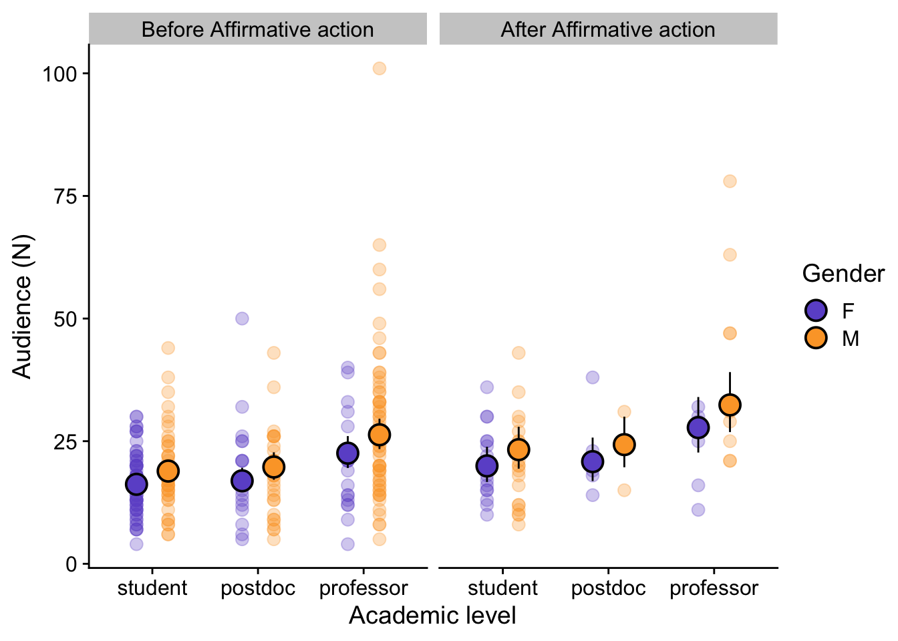

Last updated: 2024-06-30
Checks: 6 1
Knit directory:
genderBias_EcoEncontros_website/
This reproducible R Markdown analysis was created with workflowr (version 1.7.1). The Checks tab describes the reproducibility checks that were applied when the results were created. The Past versions tab lists the development history.
The R Markdown file has unstaged changes. To know which version of
the R Markdown file created these results, you’ll want to first commit
it to the Git repo. If you’re still working on the analysis, you can
ignore this warning. When you’re finished, you can run
wflow_publish to commit the R Markdown file and build the
HTML.
Great job! The global environment was empty. Objects defined in the global environment can affect the analysis in your R Markdown file in unknown ways. For reproduciblity it’s best to always run the code in an empty environment.
The command set.seed(20240630) was run prior to running
the code in the R Markdown file. Setting a seed ensures that any results
that rely on randomness, e.g. subsampling or permutations, are
reproducible.
Great job! Recording the operating system, R version, and package versions is critical for reproducibility.
Nice! There were no cached chunks for this analysis, so you can be confident that you successfully produced the results during this run.
Great job! Using relative paths to the files within your workflowr project makes it easier to run your code on other machines.
Great! You are using Git for version control. Tracking code development and connecting the code version to the results is critical for reproducibility.
The results in this page were generated with repository version 84e124d. See the Past versions tab to see a history of the changes made to the R Markdown and HTML files.
Note that you need to be careful to ensure that all relevant files for
the analysis have been committed to Git prior to generating the results
(you can use wflow_publish or
wflow_git_commit). workflowr only checks the R Markdown
file, but you know if there are other scripts or data files that it
depends on. Below is the status of the Git repository when the results
were generated:
Ignored files:
Ignored: .DS_Store
Ignored: .Rhistory
Ignored: .Rproj.user/
Ignored: output/.DS_Store
Unstaged changes:
Modified: analysis/2_audience_genderPosition.Rmd
Note that any generated files, e.g. HTML, png, CSS, etc., are not included in this status report because it is ok for generated content to have uncommitted changes.
These are the previous versions of the repository in which changes were
made to the R Markdown
(analysis/2_audience_genderPosition.Rmd) and HTML
(docs/2_audience_genderPosition.html) files. If you’ve
configured a remote Git repository (see ?wflow_git_remote),
click on the hyperlinks in the table below to view the files as they
were in that past version.
| File | Version | Author | Date | Message |
|---|---|---|---|---|
| html | ad30a02 | melina-leite | 2024-06-30 | testing working page2 |
| Rmd | 67d23e5 | melina-leite | 2024-06-30 | test |
| html | 67d23e5 | melina-leite | 2024-06-30 | test |
Data description and summary statitiscs in script
0_data_summary.
load("output/data_audience.Rdata")
data <- data_aThe audience (number of attendants in the seminar) is modeled by the gender (male, female), the academic level (student, postdoc, professor) of the speaker, and affirmative actions (before, after).
Negative binomial mixed-effects model with year as random intercept.
mg0 <- glmmTMB(audience_n~ 1 + (1|year), data=data, family= nbinom2)
mg1 <- glmmTMB(audience_n~ gender + (1|year), data=data, family= nbinom2)
mg2 <- glmmTMB(audience_n~ position_cat + (1|year), data=data, family= nbinom2)
mg3 <- glmmTMB(audience_n~ affirm_action + (1|year), data=data, family= nbinom2)
mg4 <- glmmTMB(audience_n~ gender + position_cat + (1|year),
data=data, family= nbinom2)
mg5 <- glmmTMB(audience_n~ gender + affirm_action + (1|year),
data=data, family= nbinom2)
mg6 <- glmmTMB(audience_n~ affirm_action + position_cat+ (1|year),
data=data, family= nbinom2)
mg7 <- glmmTMB(audience_n~ gender * position_cat+ (1|year),
data=data, family= nbinom2)
mg8 <- glmmTMB(audience_n~ gender * affirm_action+ (1|year),
data=data, family= nbinom2)
mg9 <- glmmTMB(audience_n~ affirm_action * position_cat+ (1|year),
data=data, family= nbinom2)
mg10 <- glmmTMB(audience_n~ gender + position_cat + affirm_action + (1|year),
data=data, family= nbinom2)
mg11 <- glmmTMB(audience_n~ gender * position_cat + affirm_action + (1|year),
data=data, family= nbinom2)
mg12 <- glmmTMB(audience_n~ gender + position_cat * affirm_action + (1|year),
data=data, family= nbinom2)
mg13 <- glmmTMB(audience_n~ gender * position_cat * affirm_action + (1|year),
data=data, family= nbinom2)
AICtab(mg0,mg1,mg2, mg3, mg4,mg5,mg6,mg7,mg8,mg9,mg10,mg11,mg12,mg13, base=T,
weights=T) %>%
kable(digits=2)| AIC | dAIC | df | weight | |
|---|---|---|---|---|
| mg11 | 2160.03 | 0.00 | 9 | 0.45 |
| mg10 | 2161.43 | 1.41 | 7 | 0.22 |
| mg7 | 2162.27 | 2.24 | 8 | 0.15 |
| mg4 | 2163.49 | 3.47 | 6 | 0.08 |
| mg12 | 2163.98 | 3.95 | 9 | 0.06 |
| mg13 | 2166.62 | 6.59 | 14 | 0.02 |
| mg6 | 2167.07 | 7.04 | 6 | 0.01 |
| mg2 | 2168.86 | 8.83 | 5 | 0.01 |
| mg9 | 2170.27 | 10.25 | 8 | 0.00 |
| mg5 | 2185.83 | 25.80 | 5 | 0.00 |
| mg1 | 2186.24 | 26.22 | 4 | 0.00 |
| mg8 | 2187.65 | 27.62 | 6 | 0.00 |
| mg0 | 2201.16 | 41.14 | 3 | 0.00 |
| mg3 | 2201.29 | 41.27 | 4 | 0.00 |
Using the DHARMa package.
The two most plausible models presented a satisfactory residual diagnostic.
plot(simulateResiduals(mg11))
| Version | Author | Date |
|---|---|---|
| 67d23e5 | melina-leite | 2024-06-30 |
plot(simulateResiduals(mg10))
| Version | Author | Date |
|---|---|---|
| 67d23e5 | melina-leite | 2024-06-30 |
The two equally plausible models for the audience included gender, academic level and affirmative actions as predictors, with the difference that the best fitted model includes an interaction of gender and academic level.
summary(mg11) Family: nbinom2 ( log )
Formula: audience_n ~ gender * position_cat + affirm_action + (1 | year)
Data: data
AIC BIC logLik deviance df.resid
2160.0 2193.3 -1071.0 2142.0 289
Random effects:
Conditional model:
Groups Name Variance Std.Dev.
year (Intercept) 0.009051 0.09513
Number of obs: 298, groups: year, 12
Dispersion parameter for nbinom2 family (): 7.05
Conditional model:
Estimate Std. Error z value Pr(>|z|)
(Intercept) 2.80057 0.06192 45.23 <2e-16 ***
genderM 0.11642 0.07417 1.57 0.1165
position_catpostdoc 0.12249 0.10663 1.15 0.2506
position_catprofessor 0.16594 0.10469 1.59 0.1130
affirm_actionafter 0.21633 0.09697 2.23 0.0257 *
genderM:position_catpostdoc -0.12984 0.14357 -0.90 0.3658
genderM:position_catprofessor 0.22663 0.12674 1.79 0.0738 .
---
Signif. codes: 0 '***' 0.001 '**' 0.01 '*' 0.05 '.' 0.1 ' ' 1performance::r2(mg11)# R2 for Mixed Models
Conditional R2: 0.221
Marginal R2: 0.180myg11 <- ggpredict(mg11, terms=c("position_cat","gender", "affirm_action"))
prs <- as.data.frame(myg11) %>% rename(affirm_action = facet)
colnames(prs)[1] <- "position_cat"
| Version | Author | Date |
|---|---|---|
| 67d23e5 | melina-leite | 2024-06-30 |
summary(mg10) Family: nbinom2 ( log )
Formula: audience_n ~ gender + position_cat + affirm_action + (1 | year)
Data: data
AIC BIC logLik deviance df.resid
2161.4 2187.3 -1073.7 2147.4 291
Random effects:
Conditional model:
Groups Name Variance Std.Dev.
year (Intercept) 0.008642 0.09296
Number of obs: 298, groups: year, 12
Dispersion parameter for nbinom2 family (): 6.87
Conditional model:
Estimate Std. Error z value Pr(>|z|)
(Intercept) 2.78546 0.05768 48.29 < 2e-16 ***
genderM 0.15395 0.05522 2.79 0.0053 **
position_catpostdoc 0.04292 0.07173 0.60 0.5496
position_catprofessor 0.33054 0.06264 5.28 1.32e-07 ***
affirm_actionafter 0.20807 0.09577 2.17 0.0298 *
---
Signif. codes: 0 '***' 0.001 '**' 0.01 '*' 0.05 '.' 0.1 ' ' 1performance::r2(mg10)# R2 for Mixed Models
Conditional R2: 0.207
Marginal R2: 0.169myg10 <- ggpredict(mg10, terms=c("position_cat","gender", "affirm_action"))
pr10 <- as.data.frame(myg10) %>% rename(affirm_action = facet)
colnames(pr10)[1] <- "position_cat"
| Version | Author | Date |
|---|---|---|
| 67d23e5 | melina-leite | 2024-06-30 |
Investigating if differences in productivity between male and female professors and researches are related to the audience.
We measured productivity publication metrics from Google Scholar for professors and researchers.
Creating productivity index using PCA 1st axis from metrics.
dp <- data %>% filter(!is.na(data$total_citation_n),
!is.na(data$nature_index_count))
colnames(dp)[22:29] <- c("tot_cit", "h", "i10", "most_cit", "cit_cum",
"career_Y", "nature_count", "nature_share")
table(dp$gender, dp$affirm_action)
before after
F 14 6
M 58 9Productivity publication metrics
pca1 <- PCA(dp[, c(22:29)], graph=F)p1 <- fviz_pca_biplot(pca1, col.ind = dp$gender, addEllipses=TRUE,
col.ind.sub="none", geom="point",
repel = TRUE) +
geom_vline(xintercept = 0, linetype="dashed") +
geom_hline(yintercept = 0, linetype="dashed")+
scale_color_manual(name="Gender",values = c("#6D57CF","#FCA532"))+
scale_shape(name="Gender")+
scale_fill_manual(name="Gender",values = c("#6D57CF","#FCA532"))+
ggtitle("Productivity metrics") +
xlab("PC1 (52%)") + ylab("PC2 (21%)") +
theme_cowplot()
p1
#("figures/pca_biplot.jpeg", width=6, height = 6) For the analysis specific for professor talks (N=87), the PCA results show that all the productivity metrics for professors were highly correlated (Figure 2B) with the first axis (52% of variance explained) while the institution indexes composed the second PCA axis (21% of variation explained).
Extracting PCA 2 first axes
dp$pc1 <- pca1$ind$coord[,1]
dp$pc2 <- pca1$ind$coord[,2]m0 <- glmmTMB(audience_n ~ 1 + affirm_action + (1|year), data=dp, family=nbinom2)
m1 <- glmmTMB(audience_n ~ gender + affirm_action +(1|year), data=dp,
family=nbinom2)
m2 <- glmmTMB(audience_n ~ pc1 + + affirm_action + (1|year), data=dp,
family=nbinom2)
m3 <- glmmTMB(audience_n ~ gender + pc1 + affirm_action + (1|year),
data=dp, family=nbinom2)
m4 <- glmmTMB(audience_n ~ gender*pc1 + affirm_action + (1|year),
data=dp, family=nbinom2)
AICtab(m0,m1,m2,m3,m4,
base=T, weights=T) %>% kable(digits=2)| AIC | dAIC | df | weight | |
|---|---|---|---|---|
| m3 | 691.32 | 0.00 | 6 | 0.60 |
| m4 | 692.95 | 1.64 | 7 | 0.27 |
| m2 | 695.04 | 3.73 | 5 | 0.09 |
| m1 | 696.94 | 5.62 | 5 | 0.04 |
| m0 | 702.13 | 10.82 | 4 | 0.00 |
Using the DHARMa package.
The two most plausible models presented a satisfactory residual diagnostic.
plot(simulateResiduals(m3))
| Version | Author | Date |
|---|---|---|
| 67d23e5 | melina-leite | 2024-06-30 |
plot(simulateResiduals(m4))
| Version | Author | Date |
|---|---|---|
| 67d23e5 | melina-leite | 2024-06-30 |
summary(m3) Family: nbinom2 ( log )
Formula: audience_n ~ gender + pc1 + affirm_action + (1 | year)
Data: dp
AIC BIC logLik deviance df.resid
691.3 706.1 -339.7 679.3 81
Random effects:
Conditional model:
Groups Name Variance Std.Dev.
year (Intercept) 1.622e-09 4.027e-05
Number of obs: 87, groups: year, 11
Dispersion parameter for nbinom2 family (): 5.52
Conditional model:
Estimate Std. Error z value Pr(>|z|)
(Intercept) 3.03070 0.11415 26.550 <2e-16 ***
genderM 0.30566 0.12366 2.472 0.0134 *
pc1 0.07246 0.02626 2.759 0.0058 **
affirm_actionafter 0.27050 0.13267 2.039 0.0415 *
---
Signif. codes: 0 '***' 0.001 '**' 0.01 '*' 0.05 '.' 0.1 ' ' 1performance::r2(m3)Random effect variances not available. Returned R2 does not account for random effects.# R2 for Mixed Models
Conditional R2: NA
Marginal R2: 0.206We used the first PCA axis as predictors together with gender to explain the professor’s audience, and found that, as expected, audience increases with productivity index (first PCA axis) but female professors still presented on average audience 1.4 times smaller than male professors.
| Version | Author | Date |
|---|---|---|
| 67d23e5 | melina-leite | 2024-06-30 |
my3 <- ggpredict(m3, terms=c("gender"))
plot(my3)
| Version | Author | Date |
|---|---|---|
| 67d23e5 | melina-leite | 2024-06-30 |
my4 <- ggpredict(m4, terms=c("pc1","gender")) %>% as.data.frame()
ggplot(my4, aes(x=x, y=predicted, col=group)) +
geom_ribbon(aes(ymin=conf.low,ymax=conf.high, fill=group), alpha=0.3,
colour = NA) +
geom_line()+
scale_color_manual(name="Gender",values = c("#6D57CF","#FCA532"))+
scale_fill_manual(name="Gender",values = c("#6D57CF","#FCA532"))+
theme_cowplot() + ggtitle("") +
ylab("Audience (N)") + xlab("Productivity index (PC1 axis)")+
geom_point(data=dp, aes(x=pc1, y=audience_n, col=gender), alpha=0.6)
| Version | Author | Date |
|---|---|---|
| 67d23e5 | melina-leite | 2024-06-30 |
#ggsave("figures/audience_professor.jpeg", width=9, height = 6)
| Version | Author | Date |
|---|---|---|
| 67d23e5 | melina-leite | 2024-06-30 |
<!–T
sessionInfo()R version 4.3.1 (2023-06-16)
Platform: aarch64-apple-darwin20 (64-bit)
Running under: macOS Sonoma 14.5
Matrix products: default
BLAS: /Library/Frameworks/R.framework/Versions/4.3-arm64/Resources/lib/libRblas.0.dylib
LAPACK: /Library/Frameworks/R.framework/Versions/4.3-arm64/Resources/lib/libRlapack.dylib; LAPACK version 3.11.0
locale:
[1] pt_BR.UTF-8/pt_BR.UTF-8/pt_BR.UTF-8/C/pt_BR.UTF-8/pt_BR.UTF-8
time zone: America/Sao_Paulo
tzcode source: internal
attached base packages:
[1] stats4 stats graphics grDevices utils datasets methods base
other attached packages:
[1] glmmTMB_1.1.9 factoextra_1.0.7 FactoMineR_2.10 performance_0.11.0
[5] MASS_7.3-60.0.1 bbmle_1.0.25.1 ggeffects_1.5.1 DHARMa_0.4.6
[9] janitor_2.2.0 patchwork_1.2.0 cowplot_1.1.3 lubridate_1.9.3
[13] forcats_1.0.0 stringr_1.5.1 dplyr_1.1.4 purrr_1.0.2
[17] readr_2.1.5 tidyr_1.3.1 tibble_3.2.1 ggplot2_3.5.1
[21] tidyverse_2.0.0 knitr_1.45
loaded via a namespace (and not attached):
[1] rstudioapi_0.16.0 jsonlite_1.8.8 datawizard_0.10.0 magrittr_2.0.3
[5] TH.data_1.1-2 estimability_1.5 farver_2.1.2 nloptr_2.0.3
[9] rmarkdown_2.27 fs_1.6.4 vctrs_0.6.5 minqa_1.2.6
[13] rstatix_0.7.2 htmltools_0.5.8.1 haven_2.5.4 broom_1.0.5
[17] sass_0.4.9 bslib_0.7.0 htmlwidgets_1.6.4 plyr_1.8.9
[21] sandwich_3.1-0 emmeans_1.10.1 zoo_1.8-12 cachem_1.1.0
[25] TMB_1.9.11 whisker_0.4.1 mime_0.12 lifecycle_1.0.4
[29] iterators_1.0.14 pkgconfig_2.0.3 gap_1.5-3 Matrix_1.6-5
[33] R6_2.5.1 fastmap_1.2.0 rbibutils_2.2.16 shiny_1.8.1.1
[37] snakecase_0.11.1 digest_0.6.35 numDeriv_2016.8-1.1 colorspace_2.1-0
[41] rprojroot_2.0.4 qgam_1.3.4 ggpubr_0.6.0 labeling_0.4.3
[45] fansi_1.0.6 timechange_0.3.0 abind_1.4-5 mgcv_1.9-1
[49] compiler_4.3.1 withr_3.0.0 doParallel_1.0.17 backports_1.5.0
[53] carData_3.0-5 highr_0.10 ggsignif_0.6.4 scatterplot3d_0.3-44
[57] flashClust_1.01-2 tools_4.3.1 httpuv_1.6.15 glue_1.7.0
[61] nlme_3.1-164 promises_1.3.0 grid_4.3.1 cluster_2.1.6
[65] generics_0.1.3 gtable_0.3.5 tzdb_0.4.0 hms_1.1.3
[69] car_3.1-2 utf8_1.2.4 ggrepel_0.9.5 foreach_1.5.2
[73] pillar_1.9.0 later_1.3.2 splines_4.3.1 lattice_0.22-6
[77] survival_3.5-8 tidyselect_1.2.1 git2r_0.33.0 xfun_0.42
[81] DT_0.33 stringi_1.8.4 workflowr_1.7.1 yaml_2.3.8
[85] boot_1.3-30 evaluate_0.23 codetools_0.2-20 multcompView_0.1-10
[89] cli_3.6.2 xtable_1.8-4 Rdpack_2.6 munsell_0.5.1
[93] jquerylib_0.1.4 Rcpp_1.0.12 coda_0.19-4.1 bdsmatrix_1.3-7
[97] parallel_4.3.1 leaps_3.1 gap.datasets_0.0.6 lme4_1.1-35.2
[101] mvtnorm_1.2-5 scales_1.3.0 insight_0.19.10 rlang_1.1.4
[105] multcomp_1.4-25